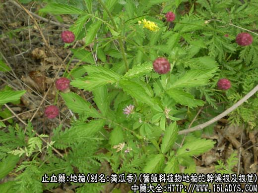
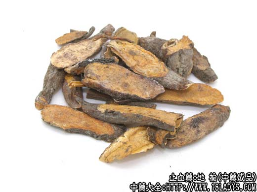
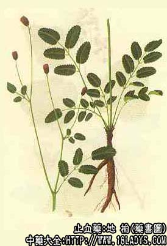

本品为较常用中药。始载《神农本草经》。本品叶似榆叶初生布地，故名。
别名：黄瓜香、山地瓜、猪人参、血箭草。
来源：为蔷薇科植物地榆的干燥根及根茎。野生于山坡草地。
植物形态：为多年生草本，高可达1.5米，根茎粗壮，生有多数肥厚的纺锤形根。茎直立，有棱。单数近心形或截形，边缘具粗锯齿，无毛，柄基具托叶。花小，密集成顶生长圆形穗状花序，花序长1～4厘米，直径约1厘米，花序梗细长，萼片4，紫红色，宿存，无花瓣，雄蕊4，外伸，花紫红色。子房上位。瘦果褐色，被细毛。
产地：主产于华北、东北地区，其他各地亦有分布。
性状鉴别：根茎为不规则柱状，其下生根，根呈纺锤形或上粗下细的圆柱形，稍弯曲，通常已折断，长约5～15厘米，直径约0.5～2厘米。近芦头处较粗，顶端具有茎痕。外皮棕褐色或紫褐色，粗糙，显瘤朽，有纵皱纹及少数须根痕。质坚硬，折断面黄白色，红棕色或带紫棕色，形成层明显，木质部黄色，呈放射状排列。气微，味苦涩。水浸液，加三氯化铁溶液，显蓝紫色（鞣质）。
以条粗，质坚，无残茎及须根者为佳。
主要成分：含鞣质（为儿茶类）、地榆皂甙和维生素A类物质。
药理作用：1、收敛。在胃肠道能止血，止泻，用于烧伤能减轻渗出。
2、抗菌。主要对肠内致病菌（如宋内氏痢疾杆菌、伤寒杆菌、副伤寒杆菌等）有抑制作用，但对金黄色葡萄菌、脑膜炎双球菌、大型结核杆菌也有不同程度抑制作用。
高压消毒后，抗菌能力下降。
炮制：切片，生用或炒炭。
性味：苦、酸、微寒。
归经：入肝、肾、大肠经。
功能：清热凉血、止血、有消肿止痛、收敛作用。
主治：便血、血痢、尿血、崩漏、疮疡肿毒。外用治水火烫伤。
临床应用：为治疗便血、烧伤常用药。
1、治久痢脓血、便血（如结肠炎、慢性菌痢等），用地榆炭，有收敛止血作用，再适当配伍清热药，效果不错，常用方为地榆煎。
2、治痔疮出血，常配槐花、黄芩、火麻仁等，凉血、清热、通便，方如槐榆煎。
3、用于烧伤创面用药，以地榆配漆大姑、黄柏等，制成糊剂或乳剂外用，敷药后可见局部分泌物减少。
此外，也有用于治溃疡病出血、咯血、崩漏、鼻衄等，有一定效果。局部外敷，可治皮炎。
使用注意：1、地榆虽可用于身体各部分急慢性出血，但以治慢性便血为主，效果较好。
2、治烧伤生用，止血炒用。
3、证属虚寒者慎用。
用量：6~15g单味大剂有时用30～60g。
处方举例：1、地榆煎：炒地榆12g、鲜生地12g，白芍6g，丹皮6g，炒山栀9g，荆芥炭3g，川黄连3g，木香1.5g（后下），水煎服。
2、槐榆煎：见槐花项下。
3、地榆外敷剂：地榆、漆大姑、黄柏，等分研末，另加少许冰片，搅匀，再加花生油制成20%糊剂，加热煮沸后外用。
注：1、商品中尚有一种棉地榆，为同属植物细叶地榆，与地榆的外形性味基本相似，惟质较韧，断面皮层有黄白色的毛状纤维。
2、云南尚产一种柴地榆为牻牛儿苗科植物紫地榆的根，当地亦作地榆用。